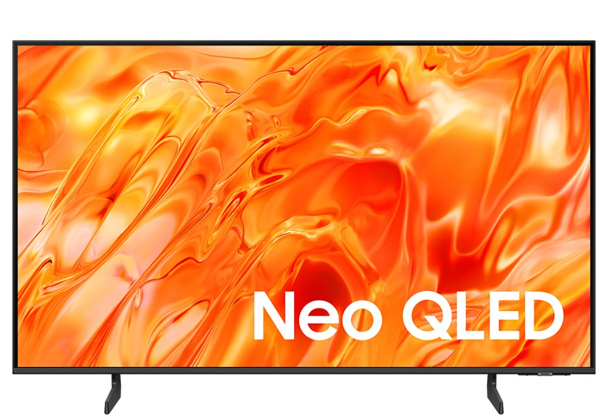
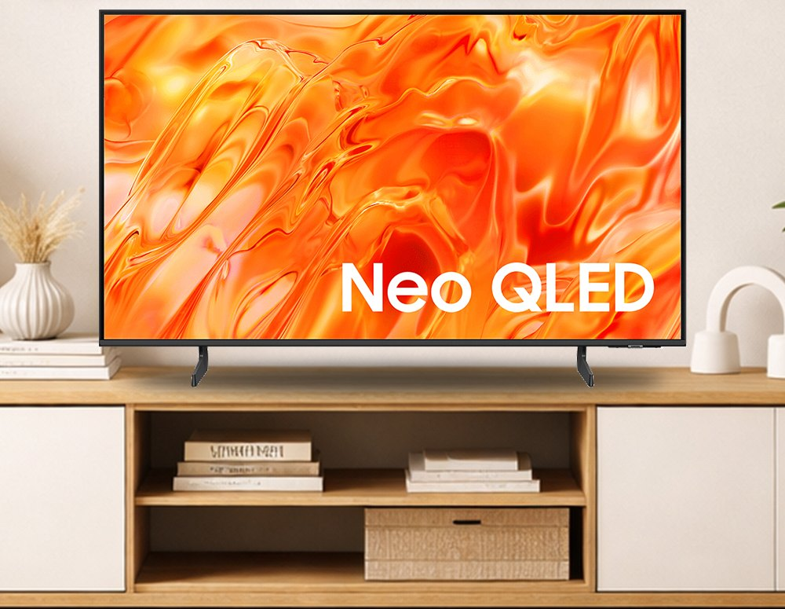
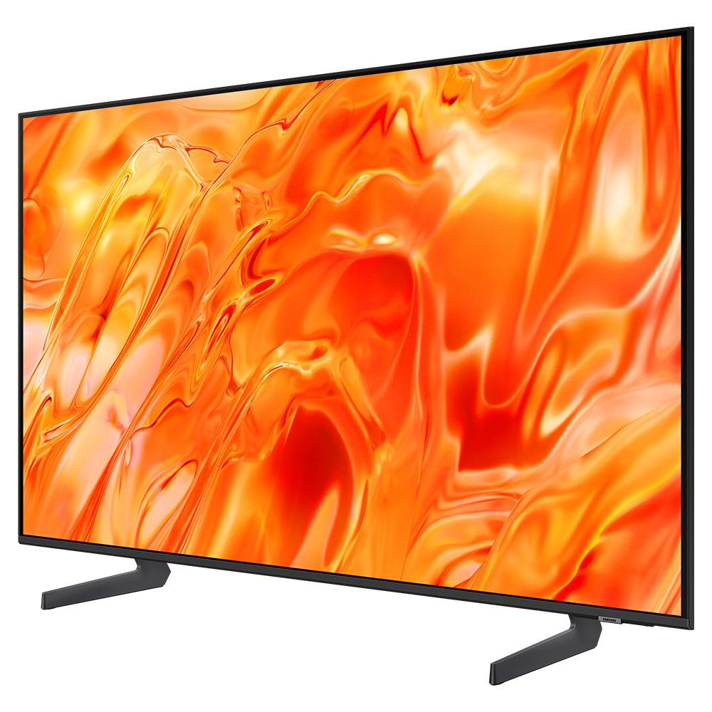
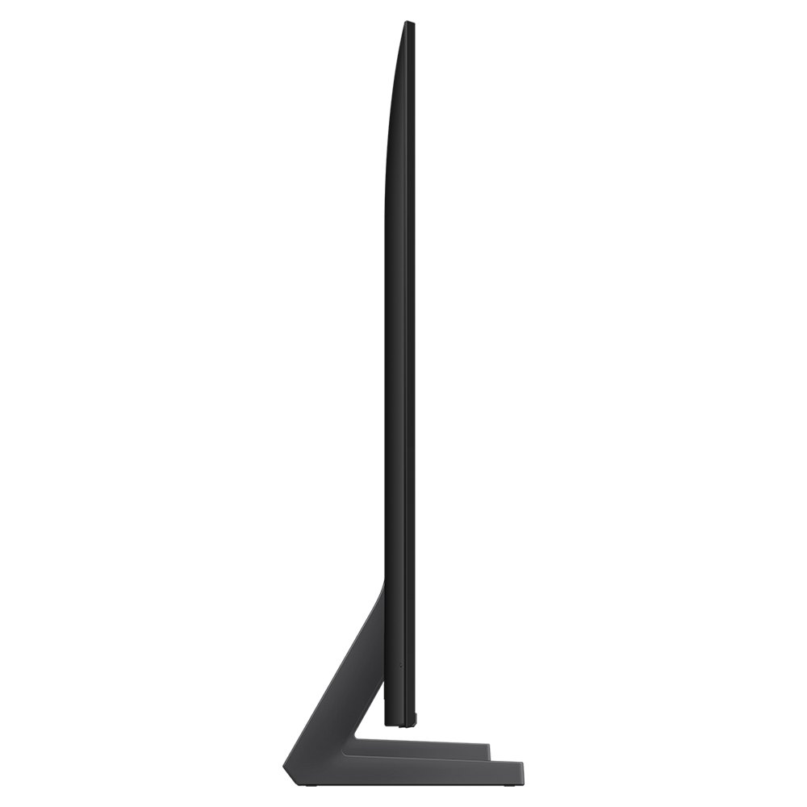
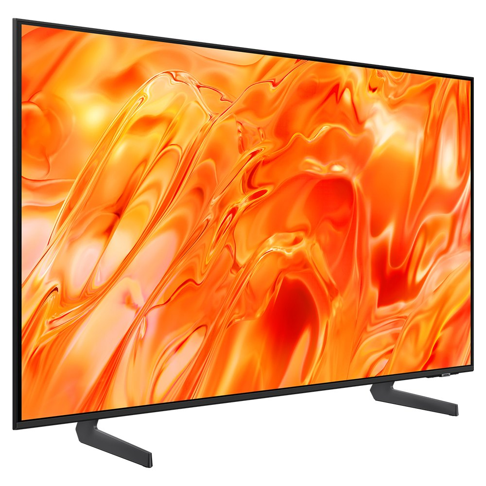

Samsung Neo QLED QNH70 75-Inch Review: Overview
This Samsung Neo QLED QNH70 review covers the KQ75QNH70AFXKR, Samsung's 2026 75-inch (189 cm) 4K Mini LED TV for the Korean market, sold with a stand. It sits at the entry point of Samsung's Neo QLED range: you get Quantum Mini LED backlighting and local dimming, but a 60 Hz panel and simpler sound and ports than the step-up QNH80.
Korean price trackers list a 2,990,000 KRW launch price (April 2026), and the Samsung official partner store listing on Naver that we checked was selling it for 2,290,000 KRW. We checked the specs against Samsung Korea's product page and Korean retail spec sheets (Enuri, Gmarket) and compared it with the QNH80 line by line. This is a spec-based review; we did not lab-measure brightness.
"A big, bright 75-inch Mini LED screen for films, sport and broadcast TV, without paying for gaming features you may not use."

Picture Quality: Mini LED on a Budget
The QNH70 uses Quantum Mini LEDs with Supreme Mini LED Dimming, the same backlight and dimming technology Samsung lists for the QNH80. Many small LEDs behind the screen are dimmed in zones, so dark scenes look deeper and bright highlights stand out more than on a basic edge-lit LED TV.
Processing is handled by Samsung's AI 4K processor (listed in Korea as the Quantum AI / NQ4 AI processor), with 4K upscaling, AI brightness and contrast tuning, HDR10+ Adaptive, Color Booster Pro and Filmmaker Mode. Korean retail listings also note 100% colour volume and Pantone validation. What you do not get is the QNH80's Auto HDR Remastering or Dolby Atmos.

Design and Installation
Samsung calls the design AirSlim: the panel is only about 26.6 mm deep, with a black front and thin bezels on three sides. The included Aero Linear stand uses two feet near the ends of the TV, about 1,253 mm apart, so measure your cabinet before delivery; a narrow stand will not work.
At about 1.68 m wide, a 75-inch screen suits a living-room cabinet around 1.7 m wide with a sofa roughly 2.3–2.5 m away. Check door widths and the lift before delivery, because the box is larger than the TV, and plan where the power cable and any soundbar will go.


Gaming, Smart Features and Sound
- Gaming: 60 Hz panel with Motion Xcelerator and DLG up to 120 Hz at lower resolution; ALLM, HGIG and Samsung Gaming Hub; no VRR or FreeSync.
- Ports: three HDMI inputs (4K 60 Hz, one with eARC), two USB-A ports, LAN, Wi-Fi 5 and Bluetooth 5.3.
- Smart TV: Tizen with Netflix and YouTube apps, screen mirroring, Zigbee/Matter smart-home control, AI voice assistant and AI energy-saving mode.
- Sound: 20 W, 2.0-channel speakers with Object Tracking Sound Lite and AI sound modes; Q-Symphony lets a compatible Samsung soundbar play together with the TV speakers.

Key Specs
| Spec | Samsung Neo QLED QNH70 75" (KQ75QNH70AFXKR) |
|---|---|
| Screen | 75 inch (189 cm), 4K UHD 3,840 × 2,160 |
| Backlight | Quantum Mini LED, Supreme Mini LED Dimming |
| Refresh rate | 60 Hz (DLG 120 Hz); no VRR |
| Processor | Samsung AI 4K processor (Quantum AI) |
| HDR | NQ HDR, HDR10+ Adaptive, Filmmaker Mode |
| Sound | 20 W, 2.0 ch, OTS Lite, Q-Symphony |
| Connections | HDMI × 3 (4K 60 Hz, eARC), USB-A × 2, LAN, Wi-Fi 5, Bluetooth 5.3 |
| Size without stand | About 1,677 × 960 × 27 mm |
| Weight | 29.2 kg (29.8 kg with stand) |
| Stand | Aero Linear feet, about 1,253 mm apart |
| VESA | 400 × 400 mm |
| Power | AC 220–240 V; 260 W rated, 93.9 W average |
| Energy rating | Korean efficiency grade 1 |
| Made in | Vietnam; Korean launch April 2026 |
| Korean price | Launch 2,990,000 KRW; 2,290,000 KRW on the Samsung partner listing at time of writing |
Specifications come from Samsung Korea's KQ75QNH70AFXKR product page and Korean retail spec sheets (Enuri, Gmarket product notice). Size figures differ by a millimetre or two between sources; brightness and dimming-zone counts are not published, and we did not lab-test the panel.
How It Compares
| QNH70 75" (this TV) | QNH80 75" (step up) | Basic 4K LED TV | |
|---|---|---|---|
| Backlight | Quantum Mini LED | Quantum Mini LED | Standard LED |
| Refresh rate | 60 Hz, no VRR | 144 Hz, VRR, FreeSync Premium Pro | Usually 60 Hz |
| Processor | AI 4K (Quantum AI) | 2nd-gen AI 4K, Auto HDR Remastering | Basic |
| Sound | 20 W 2.0 ch | 30 W 2.0 ch, Dolby Atmos | Usually 20 W |
| HDMI | 3 × 4K 60 Hz | 4 × 4K 144 Hz | Often 3 |
| Depth / weight | 26.6 mm / 29.2 kg | 52.3 mm / 23 kg | Varies |
| Best for | Films, sport, broadcast TV | Console and PC gaming | Tightest budgets |
Pros & Cons
| Pros | Cons |
|---|---|
| 75-inch Mini LED with local dimming at a mid-range price | 60 Hz panel, no VRR for fast gaming |
| Very slim 26.6 mm AirSlim panel | Wide-set feet need a cabinet at least 1.25 m wide |
| HDR10+, Filmmaker Mode and Pantone-validated colour | No Dolby Atmos; 20 W speakers are basic |
| Energy grade 1 and Q-Symphony soundbar support | Korean 220 V model; not for U.S. use |
Who It Suits (and Who Should Skip It)
- Yes: Living rooms with a sofa about 2.3–2.5 m from the screen.
- Yes: Families who mainly watch films, sport, YouTube and broadcast TV.
- Yes: Buyers who want Mini LED contrast without paying for a gaming TV.
- No: Console gamers who want 120 Hz or VRR; choose the QNH80 or a higher Neo QLED.
- No: Buyers outside Korea; look for the local Neo QLED model built for your voltage and broadcast system.
Samsung Neo QLED QNH70 FAQ
What is the Samsung Neo QLED KQ75QNH70AFXKR?
It is the 2026 Korean-market 75-inch (189 cm) Samsung Neo QLED QNH70, a 4K Mini LED TV sold here with a stand. It uses Quantum Mini LEDs with Supreme Mini LED Dimming, a Samsung AI 4K processor, HDR10+ and the Tizen smart TV system.
Is the QNH70 good for gaming?
It is fine for casual gaming but not a high-refresh gaming TV. The panel is 60 Hz with no VRR or FreeSync, and its three HDMI ports run 4K at 60 Hz. It does support ALLM (auto game mode), HGIG and Samsung Gaming Hub. If you play fast PS5 or Xbox games at 120 Hz, look at the QNH80 (144 Hz) instead.
How big is it and what viewing distance suits it?
Without the stand it measures about 1,677 × 960 × 27 mm and weighs 29.2 kg (29.8 kg with stand). Korean retailers suggest a viewing distance of about 2.3 m. The Aero Linear feet sit about 1.25 m apart, so your TV cabinet needs to be at least that wide; a VESA 400 × 400 wall mount is also possible.
How much does it cost in Korea?
Korean price trackers list a launch price of 2,990,000 KRW (April 2026). The Samsung official partner store listing we checked on Naver was 2,290,000 KRW at the time of writing; prices change often with coupons and card offers.
Can I use the Korean KQ75QNH70AFXKR in the U.S.?
It is not a good idea. The Korean model is built for Korea's 220–240 V power, Korean broadcast tuners and Korean warranty service. In the U.S., Samsung sells its Neo QLED QN70 series under different model numbers, so the Amazon button on this page searches for those U.S. versions.
Samsung 75-Inch Neo QLED 4K Mini LED TVs (QN70 Series)
The Korean KQ75QNH70AFXKR is sold through Korean retailers. In the U.S., Samsung sells the Neo QLED QN70 series under different model numbers; compare current listings on Amazon.